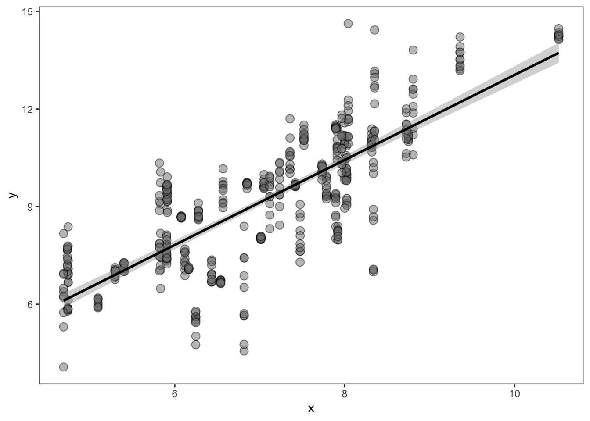
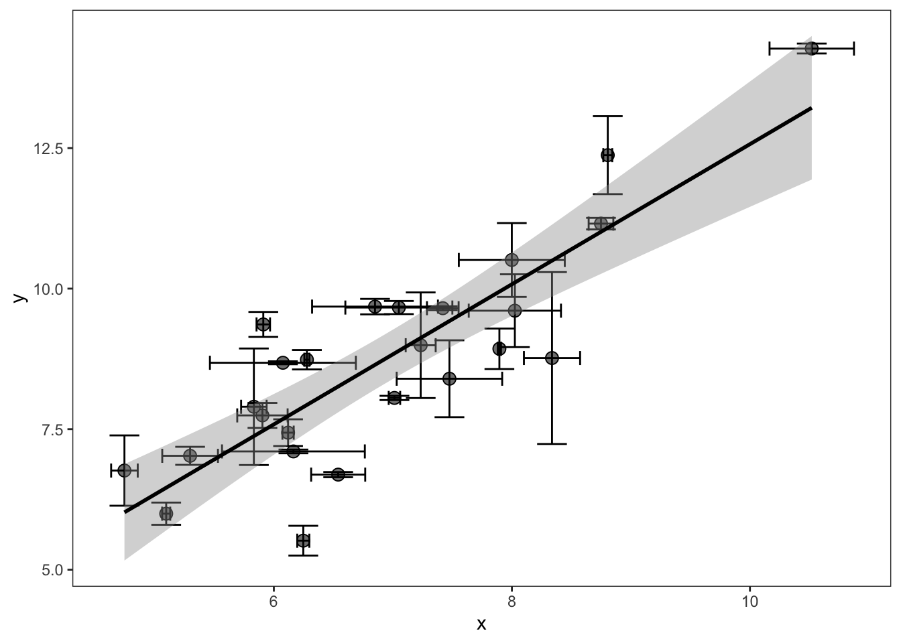
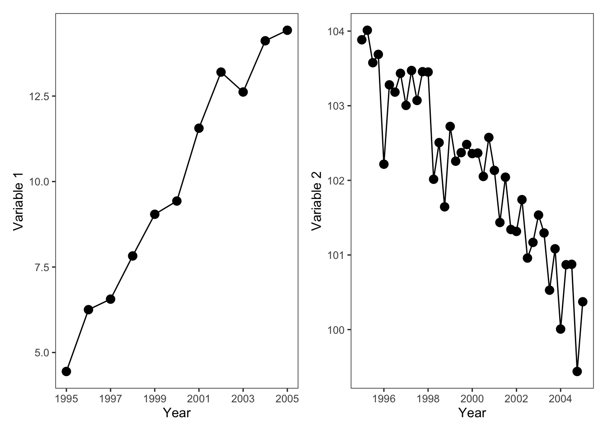
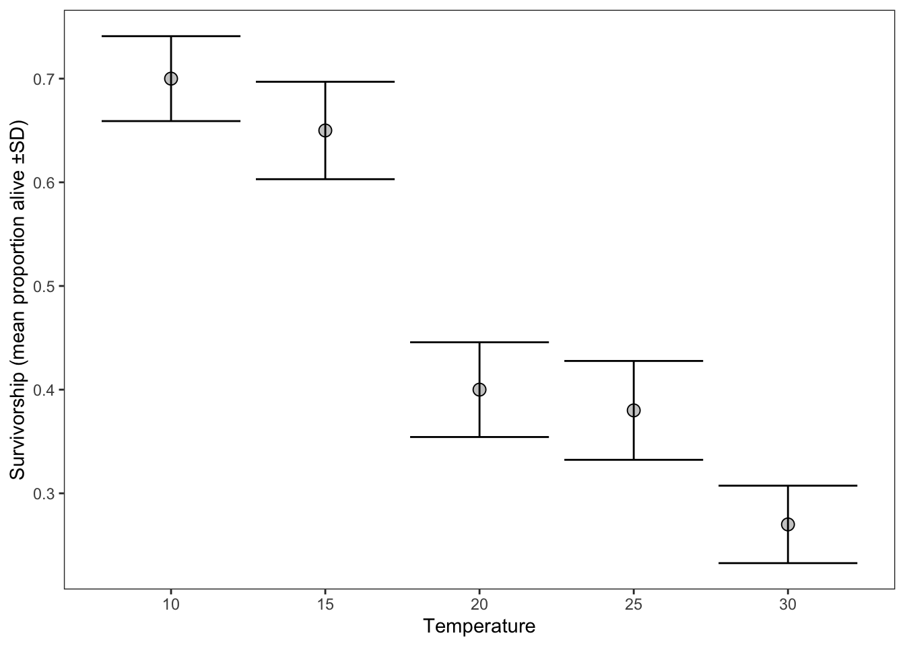

Continuous predictor
Zr: the correlation coefficient
Everything’s a spectrum, man
Zr describes the correlation between two continuous variables and is thus an important effect size in the meta-analyst tool kit. Zr type data often takes the form of a scatterplot but other formats exist (e.g., matrices, time series, and model estimates). We’ll go through these examples in turn, along with solutions and limitations for extracting Zr type data. We’ll start, however, by describing how to structure a database for Zr type effect sizes.
Database design
Not sure if we should get into this…
In general, Zr effect size extractions require a long-format database for data entry, where each row is one of the points in the corresponding analysis This dataset is then summarized in R to derive \(r\) (the correlation coefficient from cor.test) and sample size (\(n\)) and a single row per unique correlation. Be sure to have clear ID columns to help with summarization. Alternatively, you can calculate \(r\) and \(n\) while extracting data but this may lead to clunkiness in your workflow.
Note that some studies (though rarely in our experience) will report the raw correlation coefficients (\(r\)) and sample size (\(n\)), which will require a simpler data entry format (1 row per correlation coefficient). We suggest multiple tabs in your spread sheet with identical coluns except for those that need to be summarized.
Simple figures
This is the simplest type of correlation figure. In this case, you’d calibrate the x and y axes and extract each point. Then use cor.test in R to calculate the correlation coefficient:
The Zr effect size can be calculated in escalc after summarizing this data into \(r\) (the estimate output from cor.test) and \(n\) (the number of points).
Overplotting
What if there is an ugly cluster of overlapping points?

If the total number of points is reported for the study, you can duplicate the values of the red points as many times as it takes to match the total sample size. Otherwise, you’ll just have to digitize as many as you can and use a sample size that may be less than the real sample size (which makes the overall Zr estimate more conservative—e.g., less weight in the model).
In the figure above, we could safely eyeball 5 separate points (though in reality there are 12).
Error bars
Single axis error bars
But what do you do if each point is actually a mean±SD?

If the error bars are only on the y axis this is fairly straightforward but is a bit surprising. In this case, each point actually has an internal sample size, which will need to be gleaned from the methods of the paper. After determining this internal sample size, you can extract the means and SDs for each point and then draw a random sample of the data underlying each point from the appropriate statistical distribution (with the length of this sample equal to the internal sample size).
One of the biggest reasons to draw the underlying data from figures like this is to align the units of replication between these data and the rest of your dataset. For example, if the rest of your dataset uses individuals (or nests or plots) as the unit of replication but the figure above uses sites and reports the mean±sd across individuals, then you will have a serious mismatch in the units of replication between these effect sizes. This mismatch will underweight the above effect size in your models.
Here we’ll demonstrate using rnorm to draw normally distributed data for each point. Note that it is also possible to draw data from other distributions (see here and here for a worked example with a Zr-type effect size and the binomial distribution)
head(dat) x y sd n
<num> <num> <num> <num>
1: 8.337055 8.765176 1.5291804 10
2: 10.519345 14.270981 0.0882865 10
3: 6.119647 7.437811 0.2375616 10
4: 5.911378 9.363038 0.2221094 10
5: 8.748586 11.156246 0.1026777 10
6: 5.832239 7.898792 1.0365093 10 y x
<num> <num>
1: 8.915661 8.337055
2: 11.180355 8.337055
3: 10.016632 8.337055
4: 7.054232 8.337055
5: 10.356001 8.337055
6: 7.077789 8.337055
Warning
If the author-provided data presents standard error (or confidence intervals, etc) instead of standard deviation, remember that you absolutely must convert these to standard deviation before attempting to reconstruct the underlying distribution. See here on how to convert from other measures of error to standard deviation.
In this example data, each point had an internal sample size of 10 measurements. As such, that the original dataset went from a sample size of 50 (50 rows) to 500 (\(50 * 10\)), which means the resulting effect size will have considerably greater influence in your models.
If you were to plot this reconstructed data, it would look like this:

We then take this expanded dataset and calculate our correlation coefficient and effect size:
yi vi
1 1.2667 0.0020 Pretty neat, right?
ImportantSummarizing across non-independent and independent data
Simulating underlying data, as in the example above, can help align the units of replication of your dataset.
However, one should be thoughtful and careful about the non-independence structures embedded within these summaries. The resulting effect size may be based on a mixture of more and less independent data. For example, in the correlation plots above, there are two types of non-independence: the measurements across the x-axis locations and the summarized measurements within each mean±sd.
Reconstructing the underlying data with rnorm, as we demonstrated above, and then summarizing by the mean±sd of each treatment group may mix these non-independence structures.
For that reason, we suggest that data extracted like this should be tagged and that you should record whether the data was summarized across time, across spatially-independent samples (or different individuals), or across both. These factors may explain methodological heterogeneity in your dataset.
Note that similar mixtures of spatially, temporally, or spatiotemporally summarized data are also likely embedded within author-reported means±sds (which we also recommend tagging)
x and y axis error bars
What do you do if there are also error bars on the x axis? For example, if each point is a mean±SD of two different measurements. This is common in field studies, where researchers may sample vegetation at a site and some other factor (e.g., animal activity or soil nutrients) and then present the means±SD of each site in a correlation.

In this case, you’ll do approximately the same thing. However, the rows of the expanded x and y variables must align to calculate a correlation coefficient. If the internal sample sizes for x are not the same as for y, you won’t be able to align those rows. For that reason, we suggest that you choose a single internal sample size from the variable with the lowest sample size.
In the table below, you’ll see the extracted mean values for the x and y variables (x, y), their standard deviations (x_sd, y_sd), and their internal sample sizes (x_n and y_n), which differ. We’ll start by choosing the smallest sample size and then we’ll draw simulated data.
head(dat) x y y_sd y_n x_sd x_n
<num> <num> <num> <num> <num> <num>
1: 8.337055 8.765176 1.5291804 10 0.23609118 20
2: 10.519345 14.270981 0.0882865 10 0.35471132 20
3: 6.119647 7.437811 0.2375616 10 0.04738054 20
4: 5.911378 9.363038 0.2221094 10 0.05678839 20
5: 8.748586 11.156246 0.1026777 10 0.10362608 20
6: 5.832239 7.898792 1.0365093 10 0.10717426 20# Choose the n with the lowest sample size:
dat[, n := min(c(x_n, y_n))]
xy_expanded <- list()
for(i in 1:nrow(dat)){
xy_expanded[[i]] <- data.table(y = rnorm(mean = dat$y[i],
sd = dat$y_sd[i],
n = dat$n[i]),
x = rnorm(mean = dat$x[i],
sd = dat$x_sd[i],
n = dat$n[i]))
}
xy_expanded <- rbindlist(xy_expanded)
knitr::kable(head(xy_expanded))| y | x |
|---|---|
| 9.738130 | 8.257426 |
| 10.638189 | 8.326144 |
| 8.793480 | 8.443552 |
| 8.534616 | 8.406212 |
| 8.961455 | 8.717564 |
| 7.272932 | 8.387602 |
Our dataset went from 50 rows (one per point in the figure above) to 500 rows, given an internal N of 10 per point.
Now, we calculate the correlation between all of these points and calculate our ‘Zr’ effect size:
yi vi
1 1.2667 0.0020 If the variable of interest (the response variable y) is not Guassian (e.g., is not normally distributed) but is count (Poisson) or overdispersed count data (negative binomial), etc, then you need to draw the underlying data with the appropriate distribution (e.g., rpois or rnbinom). Doing so requires converting author-provided summary statistics (e.g., the mean and standard deviation in the figure above) to the distribution-specific parameters. See here where we discuss this and below where we demonstrate using the binomial distribution to reconstruct discrete individual outcomes from a correlation figure.
Time series
Some observational type studies, especially in ecology, present multiple time series, which may include the two continuous variables you wish to correlate, in this case Variable 1 and Variable 2:

If the interval between measurements is identical (on x-axis), then these figures are straightforward to extract. You simply extract each point from each figure and then copy and paste the resulting columns next to each other so that they look like this:
| x1 | Variable 1 | Variable 2 |
|---|---|---|
| 1995 | 5.234907 | 12.8504185 |
| 1996 | 5.857479 | 7.8992338 |
| 1997 | 6.892192 | 3.7911666 |
| 1998 | 7.316584 | 3.9452399 |
| 1999 | 10.164760 | -2.3057073 |
| 2000 | 9.673958 | 2.2194584 |
| 2001 | 11.569076 | -1.6953138 |
| 2002 | 11.359858 | -0.8758452 |
| 2003 | 13.381742 | -4.3772922 |
| 2004 | 14.343721 | -8.4101246 |
| 2005 | 14.065979 | -14.9336579 |
You can then calculate the correlation between Variable 1 and Variable 2, with \(n\) equal to the number of measurements.
Important
Note that in time series data, the correlation coefficient is calculated across temporal measurements and thus has a different internal non-independent structure than correlations calculated across independent sites/plots/individuals.
As such, as previously mentioned, we recommend recording whether your effect sizes are summarized across time, space/individuals, or both throughout your meta-analysis.
Mismatched time series
However, what do you do if the time series are mismatched?
Below, we’ll plot two time series, one for Variable 1 and one for Variable 2:

What is the best way to line up variable 1 and variable 2 to calculate their correlation? While imputing the missing values in the second panel is one possible approach, it is the least conservative. Instead, we recommend taking the average of the most frequently sampled variable to align with the less frequently sampled variable. Alternatively, you can filter the data (after aligning by the shared x-axis) to just those occassions where there is data for both series.
Aligning the data like this is tricky and will probably require manual merging based on nearest value in a spreadsheet software (e.g., Excel) after calibrating both the x and y axes. UGH
Discrete responses
Discrete responses with a continuous predictor
Imagine you are conducting a meta-analysis concerned with factors driving nest success or failure in a seabird. Many of the studies use a discrete predictor, e.g., presence or absence of a predator. These types of data are naturally suited for lnOR or lnRR effect sizes. However, other studies report mortality in relationship to the abundance of that predator—e.g., the continuous manifestation of presence/absence.

Depending on your meta-analysis question you may very well want to extract this data and calculate a Zr correlation effect size, which can then be converted to lnOR (see here) and compared to your other lnOR discrete-predictor effect sizes. To do so, extract each point, which is an individual, and calculate Zr with the responses as a binary variable of 0 or 1.
This conversion is safe because presence/absence is a discretized version of abundance and because the unit of replication is the number of nests (or individuals) in both cases.
Proportion data with a continuous predictor
You can imagine similar challenges where instead of 0 or 1 responses, the authors report % of a population:

You can calculate Zr directly between the predictor (temperature, x-axis) and the proportion alive (the y axis), directly.
However, each location on the x-axis actually represents a population of individuals, all of whom were monitored to determine the proportion alive. As such, simply calculating Zr directly from the proportion ignores population size and treats the number of surveys (or sites) as the unit of replication (n=10).
This can lead to a serious mismatch with the rest of your dataset—if the rest of your dataset is based the number of individuals as the unit of replication (like above)
To deal with this, the best option would be to convert the proportion data to binary response data based on the total number of individuals in each x-axis treatment—if this can be reconstructed from author reported summaries.
For example, if this figure reflects an experiment where each temperature treatment had 15 individuals, then you can multiply the survivorship at each temperature level by 15, and then expand this dataset to have a 0 or 1 for all 15 individuals per temperature treatment.
Let’s give it a try. dt is a data.table with a column for proportion alive and for temperature. We’ll calculate the number of living and dead individuals, make the dataset long so that these are in one column, and then duplicate the dataset to be one row per individual. Finally, we’ll create a binary column of 0s and 1s:
temperature proportion_alive number_alive number_dead
<num> <num> <num> <num>
1: 10.00000 0.3602823 5 10
2: 11.66667 0.5428569 8 7
3: 13.33333 0.8000000 12 3
4: 15.00000 0.6827395 10 5
5: 16.66667 0.7809066 11 4
6: 18.33333 0.7700363 11 4 temperature proportion_alive status n_individuals
<num> <num> <fctr> <num>
1: 10.00000 0.3602823 number_alive 5
2: 11.66667 0.5428569 number_alive 8
3: 13.33333 0.8000000 number_alive 12
4: 15.00000 0.6827395 number_alive 10
5: 16.66667 0.7809066 number_alive 11
6: 18.33333 0.7700363 number_alive 11[1] 150| temperature | proportion_alive | living |
|---|---|---|
| 10 | 0.3602823 | 1 |
| 10 | 0.3602823 | 1 |
| 10 | 0.3602823 | 1 |
| 25 | 0.3054186 | 0 |
| 25 | 0.3054186 | 0 |
| 25 | 0.3054186 | 0 |
We have now expanded this dataset from a single row per temperature treatment (n=17) to a single row per individual (n=255) and we have shifted the unit of replication from number of temperature treatments to number of individuals.
We can now calculate a correlation coefficient and our Zr effect size:
yi vi
-0.061351278 0.006802721
Important
Continuous predictors with discrete responses can also be analyzed with a Hazard Ratio effect size. These are not supported by escalc and rarely meta-analyzed yet should be further integrated into meta-analytic workflows.
IS THIS TRUE? This was something Shinichi said, I think.
Mean±SD proportion data with continuous predictor
Now let’s look at a similar situation, except the figure is presenting mean±SD mortality across separate trials within each temperature treatment.

If we want our unit of replication to be based on the number of individuals, we need to try to reconstruct the underlying distributions behind each of these summarized trials. This will allow us to calculate a correlation across individuals for the binary response of being alive or dead, instead of across the mean per trial.
We also, of course need to figure out, from the text, the number of individuals and the number of trials (or sites, plots, etc) that the mean±sd were calculated from.
Note
A similar data structure could occur with discrete outcomes per plot instead of individuals with the number of sites/islands interchangeable with the number of trials.
An example would be the number of plots occupied by a species (the discrete outcome) per study site (the trial), which are sampled across some continuous gradient of interest.
To do this, we will do something similar as in the previous section. However we will use either the binomial or beta-binomial distribution instead of the normal distribution.
To understand whether to use the binomial or beta-binomial distribution, we will check whether the observed (author-reported) standard deviation is greater than the theoretical standard deviation of the binomial distribution, which is defined by the proportion and the the number of individuals per trial.
[1] 0It looks like the reported standard deviations are all less than or equal to the theoretical standard deviation of the binomial family. So we can use the binomial distribution to generate the raw underyling data. See here for the equations and a fuller description, as well as how to generate data for beta-binomial distributed data (when \(sd_{reported} > sd_{theoretical}\)).
Now we’ll draw binomial data with the rbinom function. We specify size as number of individuals per trial (n_individuals in our dataset dt), n as number of trials (n_trials in our dataset), and p as the author reported mean proportion alive (proportion_alive). The function will return a numeric vector, with each element indicating the number of alive individuals per trial. With 3 trials, each vector should have a length of 3.
For a single temperature treatment, this looks like this:
rbinom(p = dt$proportion_alive[1],
size = dt$n_individuals[1],
n = dt$n_trials[1])[1] 16 14 11Each element of the vector reports the estimated number of individuals that survived of the 20 individuals in that trial.
Note
Note that if the number of individuals differed across trials within the same temperature treatment, you can provide a vector of values instead of a single value to the size argument:
However, in this case, we question whether the article’s authors should have summarized this data by mean±sd in the first place.
Now we’ll use a for loop to iterate over our dataset per temperature treatment. We’ll take the sum of the vector returned by rbbinom, which gives the total number of living individuals across the three trials.
| n_alive | temperature |
|---|---|
| 49 | 10 |
| 46 | 15 |
| 19 | 20 |
| 24 | 25 |
| 13 | 30 |
Now we can calculate the number of dead individuals per temperature treatment based on the total number of individuals across the 3 trials (3 * 20 = 60)
y_expanded[, n_dead := 60 - n_alive]
y_expanded[, n_dead := as.integer(n_dead)]As with the section above, you can then expand this dataset from a row per temperature treatment to become a row per individual and temperature treatment, with a binary outcome variable of living or dead:
y_expanded.mlt <- melt(y_expanded,
measure.vars = c("n_alive", "n_dead"),
variable.name = "status",
value.name = "n_individuals")
# Now expand to n rows per outcome:
final_dat <- y_expanded.mlt[rep(seq_len(.N), n_individuals), ]
# add a binary outcome:
final_dat[, living := ifelse(status == "n_alive", 1, 0)]
final_dat <- final_dat[, .(temperature, living)]
nrow(final_dat)[1] 300| temperature | living |
|---|---|
| 10 | 1 |
| 10 | 1 |
| 10 | 1 |
| 10 | 1 |
| 10 | 1 |
| 30 | 0 |
| 30 | 0 |
| 30 | 0 |
| 30 | 0 |
| 30 | 0 |
This final dataset has 300 rows, one for each individual, and the necessary ingredients for calculating Zr, with number of individuals as the unit of replication. If we had simply calculated Zr from the author-reported means, our sample size would have been 5 and our unit of replication would have been number of trials, instead of number of individuals.
Reconstructing the underlying binomial distribution as we did here gives the resulting effect size considerably higher weight in your meta-analytic models, and may help align your unit of replication to lnOR type effect sizes (if those are also in your dataset and you are planning on converting effect sizes).
Non-independent correlations
Matrices
Some types of correlations are more complicated because they are based on pairwise matrices that describe relationships between individuals. As such, each value is not independent because the same individuals engaged with other individuals. For instance, correlations between pair-wise behaviors. An example would be the relationship between grooming behavior and defense, which was meta-analyzed by Schino (2007, https://doi.org/10.1093/beheco/arl045). Is grooming adaptive because it leads to mutual defense with grooming partners?
With data like this, you might have a matrix of grooming between individuals:
| Sally | James | Bart | Sergeant Brown | |
|---|---|---|---|---|
| Sally | NA | 91.36096 | 8.034904 | 6.509825 |
| James | NA | NA | 48.255367 | 6.863337 |
| Bart | NA | NA | NA | 83.890405 |
| Sergeant Brown | NA | NA | NA | NA |
Associated with a matrix of defending each other from adversaries:
| Sally | James | Bart | Sergeant Brown | |
|---|---|---|---|---|
| Sally | NA | 87.59996 | 47.30431 | 53.50549 |
| James | NA | NA | 51.38824 | 75.13249 |
| Bart | NA | NA | NA | 27.07480 |
| Sergeant Brown | NA | NA | NA | NA |
First, you need to melt these matrices into vectors:
Since the pairs are aligned you can then calculate Kendall’s correlation coefficient:
res <- cor.test(mat1$value, mat2$value, method = "kendall")
res
Kendall's rank correlation tau
data: mat1$value and mat2$value
T = 7, p-value = 1
alternative hypothesis: true tau is not equal to 0
sample estimates:
tau
-0.06666667 And now you’re free to calculate ZCOR:
escalc(measure = "ZCOR",
ri = res$estimate,
ni = nrow(mat1))
yi vi
1 -0.0668 0.3333 IS THIS CORRECT???
WHAT ABOUT rcalc???
Model estimates
….
NOTES/Questions:
“For meta-analyses involving multiple (dependent) correlation coefficients extracted from the same sample, see also the rcalc function.” <- from escalc documentation
rcalc: “Function to calculate the variance-covariance matrix of correlation coefficients computed based on the same sample of subjects.” Ooof. This is another dimension of complexity….Is this what should be used for the Matrices??